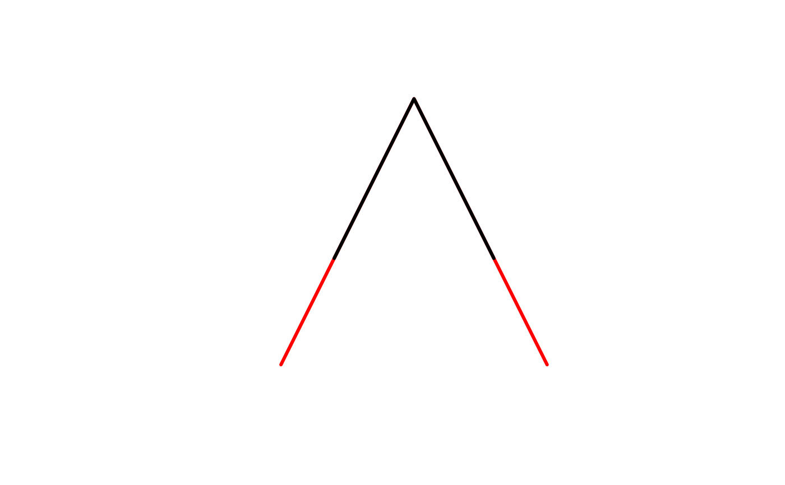

get substring from linestring
Examples
library(sf)
lines = st_sfc(st_linestring(rbind(c(0,0), c(1,2), c(2,0))), crs = 4326)
spl = st_linesubstring(lines, 0.2, 0.8) # should warn
#> Warning: st_linesubstring does not follow a geodesic; you may want to use st_geod_segmentize first
plot(st_geometry(lines), col = 'red', lwd = 3)
plot(spl, col = 'black', lwd = 3, add = TRUE)

st_linesubstring(lines, 0.49999, 0.8) # three points
#> Warning: st_linesubstring does not follow a geodesic; you may want to use st_geod_segmentize first
#> Geometry set for 1 feature
#> Geometry type: LINESTRING
#> Dimension: XY
#> Bounding box: xmin: 0.99998 ymin: 0.8 xmax: 1.6 ymax: 2
#> Geodetic CRS: WGS 84
#> LINESTRING (0.99998 1.99996, 1 2, 1.6 0.8)
st_linesubstring(lines, 0.49999, 0.8, 0.001) # two points: snap start to second node
#> Warning: st_linesubstring does not follow a geodesic; you may want to use st_geod_segmentize first
#> Geometry set for 1 feature
#> Geometry type: LINESTRING
#> Dimension: XY
#> Bounding box: xmin: 1 ymin: 0.8 xmax: 1.6 ymax: 2
#> Geodetic CRS: WGS 84
#> LINESTRING (1 2, 1.6 0.8)